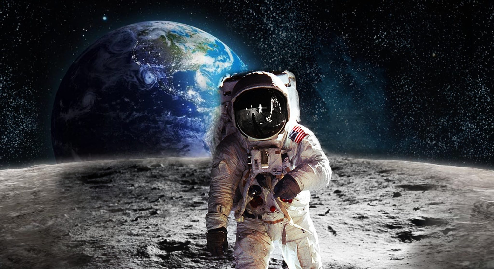

<!DOCTYPE html>
<html>
<head>
  <script>
  function openCity(evt, cityName) {
      var i, tabcontent, tablinks;
      tabcontent = document.getElementsByClassName("tabcontent");
      for (i = 0; i < tabcontent.length; i++) {
          tabcontent[i].style.display = "none";
      }
      tablinks = document.getElementsByClassName("tablinks");
      for (i = 0; i < tablinks.length; i++) {
          tablinks[i].className = tablinks[i].className.replace(" active", "");
      }
      document.getElementById(cityName).style.display = "block";
      evt.currentTarget.className += " active";
  }

  // Get the element with id="defaultOpen" and click on it
  document.getElementById("defaultOpen").click();
  </script>
  </div class='container'>
  </div class="row">
  </body>
  </html>

  <!DOCTYPE html>
  <html>
  <head>
  <meta name="viewport" content="width=device-width, initial-scale=1">
  <style>
  * {box-sizing: border-box}
  body {font-family: Verdana, sans-serif; margin:0}
  .mySlides {display: none}
  img {vertical-align: middle;}

  /* Slideshow container */
  .slideshow-container {
  max-width: 1000px;
  position: relative;
  margin: auto;
  }

  /* Next & previous buttons */
  .prev, .next {
  cursor: pointer;
  position: absolute;
  top: 50%;
  width: auto;
  padding: 16px;
  margin-top: -22px;
  color: white;
  font-weight: bold;
  font-size: 18px;
  transition: 0.6s ease;
  border-radius: 0 3px 3px 0;
  }

  /* Position the "next button" to the right */
  .next {
  right: 0;
  border-radius: 3px 0 0 3px;
  }

  /* On hover, add a black background color with a little bit see-through */
  .prev:hover, .next:hover {
  background-color: rgba(0,0,0,0.8);
  }


  /* The dots/bullets/indicators */
  .dot {
  cursor: pointer;
  height: 15px;
  width: 15px;
  margin: 0 2px;
  background-color: #bbb;
  border-radius: 50%;
  display: inline-block;
  transition: background-color 0.6s ease;
  }

  .active, .dot:hover {
  background-color: #717171;
  }

  /* Fading animation */
  .fade {
  -webkit-animation-name: fade;
  -webkit-animation-duration: 1.5s;
  animation-name: fade;
  animation-duration: 1.5s;
  }

  @-webkit-keyframes fade {
  from {opacity: .4}
  to {opacity: 1}
  }

  @keyframes fade {
  from {opacity: .4}
  to {opacity: 1}
  }


  </style>
  </head>
  <body>

  <div class="slideshow-container">

  <div class="mySlides fade">
  
  </div>

  <div class="mySlides fade">
  
  </div>

  <div class="mySlides fade">
  
  </div>

  <a class="prev" onclick="plusSlides(-1)">&#10094;</a>
  <a class="next" onclick="plusSlides(1)">&#10095;</a>

  </div>
  <br>

  <div style="text-align:center">
  <span class="dot" onclick="currentSlide(1)"></span>
  <span class="dot" onclick="currentSlide(2)"></span>
  <span class="dot" onclick="currentSlide(3)"></span>
  </div>

  <script>
  var slideIndex = 1;
  showSlides(slideIndex);

  function plusSlides(n) {
  showSlides(slideIndex += n);
  }

  function currentSlide(n) {
  showSlides(slideIndex = n);
  }

  function showSlides(n) {
  var i;
  var slides = document.getElementsByClassName("mySlides");
  var dots = document.getElementsByClassName("dot");
  if (n > slides.length) {slideIndex = 1}
  if (n < 1) {slideIndex = slides.length}
  for (i = 0; i < slides.length; i++) {
      slides[i].style.display = "none";
  }
  for (i = 0; i < dots.length; i++) {
      dots[i].className = dots[i].className.replace(" active", "");
  }
  slides[slideIndex-1].style.display = "block";
  dots[slideIndex-1].className += " active";
  }
  </script>

<h1> ASTRONOMİ NEDİR? </h1>
<p>İnsanoğlu için ulaşılması güç olan gökyüzü her zaman vazgeçilmeyen merak konularından olmuştur. Bu merak çıplak gözle görülen gök cisimleri hakkında bilgi edinme çabasından başlamış Dünya dışına araç ve canlı göndermeye kadar ilerlemiştir. Astronomi ya da gök bilimi tarih boyunca insanlığın bu alanda yaptığı bilimsel çalışmaları içeren disiplin olarak karşımıza çıkmıştır. Bu bilim dalı Dünya atmosferi dışında yer alan gözlemlenebilir tüm durumları araştırmaktadır. Kara delikler, kozmik ışımalar gibi evrenin büyük sırları da astronominin konuları arasındadır.
Bilim insanları büyük bir merak içinde evrenin, yıldız sistemlerinin, gezegenlerin oluşumunu incelerken bu alandan elde ettikleri verilerle Dünya’da ortaya çıkan yaşamın sırlarını çözmeye çalışmakta, gezegenimizde olana benzer habitatların evrenin başka köşelerinde bulunup bulunmadığını da araştırmaktadır.
</p>

<h2> Astronominin Geçmişi </h2>
<p>Bazı bilim dalları yalnızca birkaç yüzyıllık tarihe sahipken arkeolojik kazılarda ortaya çıkartılan veriler insanların binlerce yıl öncesinde de gökyüzü hakkında bilgilerinin olduğunu gösterir. Işık ve sanayi kirliliğinin bulunmaması nedeniyle antik çağlarda gök cisimlerinin günümüze oranla daha net izlenebildiği, bu sayede yeni bilgilere erişilebildiği de fark edilmektedir. Dairesel tarzdaki pek çok yapının yine gökyüzünün izlenebilmesi için yapıldığı düşünülmekte, Sümerlerin ziggurat ismi verilen yapılarını astronomik çalışmalarda kullandığı ise bilinmektedir. Antik yazıtlarda ve destanlarda yer alan bazı detaylar da antik toplulukların bu alanda yaptıkları çalışmalarda bir ölçüde başarılı olduklarını göstermektedir.
İnsanların zamanı ölçebilmek için binlerce yıldır kullandıkları takvimler yine astronominin ilk evrelerinin ürünüdür. Ay’ın hareketleri ve med-cezir, nehirlerin taşması arasındaki ilişkinin fark edilmesi de gözlemlerin sonucudur.
</p>

<h2> Modern Çağda Astronomi </h2>
<p>Binlerce yıllık süreç içerisinde insanlık bilimsel çalışmalarda dalgalı bir süreç yaşasa da teknolojinin gelişimi gök bilimcilere büyük yarar sağlamıştır. Devasa teleskopların üretilmesi ile birlikte gözlemler daha kolay hale gelirken geliştirilen pek çok yöntem her dakika yeni bir gezegenin keşfini mümkün kılmaktadır. Teknoloji ile birlikte sürecin daha da karmaşıklaşması çalışmaların geliştirilmesi amacıyla alt bilim dallarının oluşmasına da neden olmuştur.
Günümüzde ise astronomi bilgi merakını çoktan aşmıştır. Ay’a ilk insanın gönderilmesinin üzerinden onlarca yıl geçtikten sonra uzayda koloni kurulması, uzay turizminin geliştirilmesi üzerine çalışmalar astronomiden elde edilen veriler ışığında hızla devam ediyor.
</p>
<meta name="viewport" content="width=device-width, initial-scale=1">
<style>
* {box-sizing: border-box}
body {font-family: "Lato", sans-serif;}

/* Style the tab */
.tab {
    float: left;
    border: 1px solid #ccc;
    background-color:sky-blue;
    width: 30%;
    height: 300px;
}

/* Style the buttons inside the tab */
.tab button {
    display: block;
    background-color:#9DC5DA;
    color:sky-blue;
    padding: 22px 16px;
    width: 100%;
    border: none;
    outline: none;
    text-align: left;
    cursor: pointer;
    transition: 0.3s;
    font-size: 17px;
}

/* Change background color of buttons on hover */
.tab button:hover {
    background-color:#E38A8A;
}

/* Create an active/current "tab button" class */
.tab button.active {
    background-color: #ccc;
}

/* Style the tab content */
.tabcontent {
    float: left;
    padding: 0px 12px;
    border: 1px solid #ccc;
    width: 70%;
    border-left: none;
    height: 300px;
}
</style>
</head>
<body>
  <div class='container'>
    <div class="row">

<div class="tab">
  <button class="tablinks" onclick="openCity(event, 'Merkür')" id="defaultOpen">Merkür</button>
  <button class="tablinks" onclick="openCity(event, 'Mars')">Mars</button>
  <button class="tablinks" onclick="openCity(event, 'Jüpiter')">Jüpiter</button>
</div>

<div id="Merkür" class="tabcontent">
  <h3>Merkür</h3>
  <p>Birkaç özelliği ile diğer gezegenlerden farklıdır. Güneşe en yakın gezegendir. Gezegenlerin içinde en küçük olanıdır. Bilinen hiçbir uydusu yoktur. Atmosferi yok denecek kadar azdır ve az miktarda sodyum ve helyumdan oluşur. Güneşe çok yakın olması nedeni ile güneş sistemindeki Venüs’ten sonraki en sıcak gezegendir. Atmosferi hemen hiç olmadığından gece gündüz ısı farkı çok büyüktür.</p>
</div>

<div id="Mars" class="tabcontent">
  <h3>Mars</h3>
  <p>Mars, güneşten uzak dördüncü gezegeni. Dünya’dan, bir sonraki gezegen. Mars, güneşten 142 milyon mil daha uzaktadır. Gezegen Dünya’nın yaklaşık altıda biri büyüklüktedir. Mars, Kızıl Gezegen olarak bilinir. Kırmızı rengini toprağındaki demirden alır. Mars’ın iki küçük ayı var. Adları: Phobos ve Deimos.

Mars çok soğuktur. Mars’ın ortalama sıcaklığı eksi 63 derecedir.</p>
</div>

<div id="Jüpiter" class="tabcontent">
  <h3>Jüpiter</h3>
  <p> Güneş sisteminin en büyük gezegeni olma özelliği ile dikkat çeken Jüpiter, Güneş’e uzaklık bakımından beşinci sıradadır. Bu büyük gezegen Güneş çevresinden turunu 11,86 yılda tamamlamaktadır. Çok büyük bir manyetik alana sahiptir.

Bu alan sayesinde 16 uydusu olduğu bilinmektedir. Dünyadan bakıldığında parlak bir disk biçiminde görünmektedir. Çok büyük olma özelliği sebebiyle, Eski Roma mitolojisindeki tanrıların tanrısı olan ve Eski Roma’nın en büyük tanrısı Jüpiter’in adı verilmiştir. Bu gezegenin çoğu kısmı hidrojen ve helyumdan meydana gelmektedir</p>
</div>


</body>
</html>
